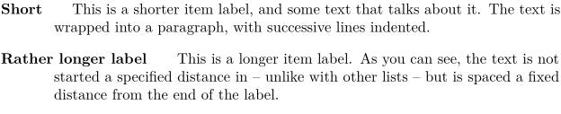
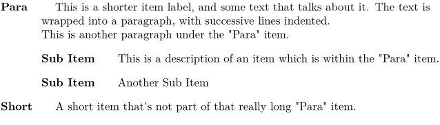
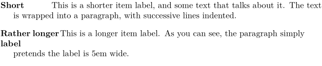

Contents
Basic Description Lists
LaTeX
LaTeX provides a description environment, which works just like an itemized or enumerated list except that the item labels are specified by an (optional) argument to the \item command, rather than being automatically generated. This is useful for making lists of definitions and other sorts of descriptions that are headed by a keyword.
\documentclass{article} \begin{document} \begin{description} \item[Short] This is a shorter item label, and some text that talks about it. The text is wrapped into a paragraph, with successive lines indented. \item[Rather longer label] This is a longer item label. As you can see, the text is not started a specified distance in -- unlike with other lists -- but is spaced a fixed distance from the end of the label. \end{description} \end{document}
ConTeXt
ConTeXt provides a similar mechanism. Unlike the LaTeX version, ConTeXt's description mechanism does not enclose the items in an environment, but instead formats them independently according to formats given in \setupdescriptions or \definedescription. The \definedescription latter command is used to define a named description class, which can later be called using its name. This example defines a latexdesc description, with parameters that roughly approximate the LaTeX defaults.
-
\definedescription[latexdesc][ headstyle=bold, style=normal, align=flushleft, alternative=hanging, width=broad, margin=1cm] \latexdesc{Short} This is a shorter item label, and some text that talks about it. The text is wrapped into a paragraph, with successive lines indented. \latexdesc{Rather longer label} This is a longer item label. As you can see, the text is not started a specified distance in -- unlike with other lists -- but is spaced a fixed distance from the end of the label.
- 
The empty lines (or \par) after each description (here, \latexdesc) line are required.
The margin=dimension key specifies the hanging indentation for lines after the first line. In addition, the separation between the label and the text can be specified using a distance=dimension key.
Multi-Paragraph Descriptions
LaTeX
Because the LaTeX description mechanism is an environment, it is simple to include multiple paragraphs in a description environment, or even to embed sub-lists. For instance, consider the following example:
\documentclass{article} \begin{document} \begin{description} \item[Para] This is a shorter item label, and some text that talks about it. The text is wrapped into a paragraph, with successive lines indented. This is another paragraph under the "Para" item. \begin{description} \item[Sub-Item] This is a description of an item which is within the "Para" item. \item[Sub-Item] Another sub-item. \end{description} \item[Short] A short item that's not part of that really long "Para" item. \end{description} \end{document}
In this example, the code indentation has been used to illustrate the alignment of the typeset output. Everything between \item[Para] and \item[Short] is part of the "Para" item, and is indented by the same amount. The embedded description then embeds any following lines on the "Sub-Item"s by an additional indentation, as one would expect.
ConTeXt
Multiple paragraphs (without first line indenting) can be created as follows:
-
\definedescription[descr][ headstyle=bold, style=normal, align=flushleft, alternative=hanging, width=broad, margin=1cm] \startdescr{Para} This is a shorter item label, and some text that talks about it. The text is wrapped into a paragraph, with successive lines indented. This is another paragraph under the "Para" item. \startdescr{Sub Item} This is a description of an item which is within the "Para" item. \stopdescr \startdescr{Sub Item} Another Sub Item \stopdescr \stopdescr \startdescr{Short} A short item that's not part of that really long "Para" item. \stopdescr
- 
Descriptions with Fixed Label Width
LaTeX
In LaTeX, the mdwlist package can be used to set a fixed label width.
\documentclass{article} \usepackage{mdwlist} \begin{document} \begin{basedescript}{\desclabelstyle{\pushlabel}\desclabelwidth{6em}} \item[Short] This is a shorter item label, and some text that talks about it. The text is wrapped into a paragraph, with successive lines indented. \item[Rather longer label] This is a longer item label. As you can see, the paragraph simply starts 6em in. \end{basedescript} \end{document}
ConTeXt
Using an explicit dimension as argument for the 'width' parameter sets the label to 5em:
-
\definedescription[notation][ headstyle=bold, style=normal, align=flushleft, alternative=hanging, width=5em] \notation{Short} This is a shorter item label, and some text that talks about it. The text is wrapped into a paragraph, with successive lines indented. \notation{Rather longer label} This is a longer item label. As you can see, the paragraph simply pretends the label is 5em wide.
- 
Another example:
-
\setupcolors[state=start] \definedescription[Desc][alternative=top, hang=20, headstyle=bold, headcolor=blue command=\hskip-1cm, margin=1cm] \Desc{Short} This item's short label is set above the paragraph. The paragraph starts 1cm in. \Desc{Rather longer label} This item's rather longer label is also set above the paragraph. The paragraph starts 1cm in.
-